A Prehistory of The Ethereum Protocol
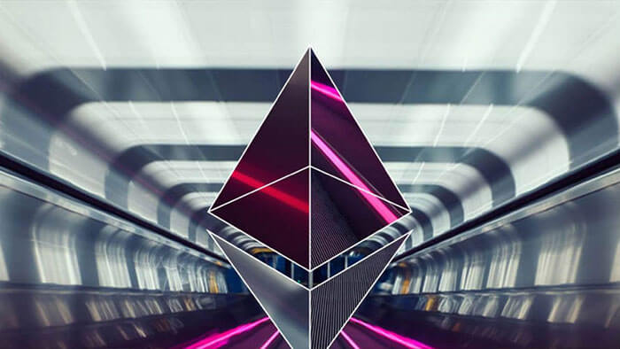Although the ideas behind the current Ethereum protocol have largely been stable for two years, Ethereum did not emerge all at once, in its current conception and fully formed. Before the blockchain has launched, the protocol went through a number of significant evolutions and design decisions. The purpose of this article will be to go through the various evolutions that the protocol went through from start to launch; the countless work that was done on the implementations of the protocol such as Geth, cppethereum, pyethereum, and EthereumJ, as well as the history of applications and businesses in the Ethereum ecosystem, is deliberately out of scope.
Also out of scope is the history of Casper and sharding research. While we can certainly make more blog posts talking about all of the various ideas Vlad, Gavin, myself and others came up with, and discarded, including “proof of proof of work”, hub-and-spoke chains, “hypercubes”, shadow chains (arguably a precursor to Plasma), chain fibers, and various iterations of Casper, as well as Vlad’s rapidly evolving thoughts on reasoning about incentives of actors in consensus protocols and properties thereof, this would also be far too complex a story to go through in one post, so we will leave it out for now.
Let us first begin with the very earliest version of what would eventually become Ethereum, back when it was not even called Ethereum. When I was visiting Israel in October 2013, I spent quite a bit of time with the Mastercoin team, and even suggested a few features for them. After spending a couple of times thinking about what they were doing, I sent the team a proposal to make their protocol more generalized and support more types of contracts without adding an equally large and complex set of features: https://web.archive.org/web/20150627031414/http://vbuterin.com/ultimatescripting.html
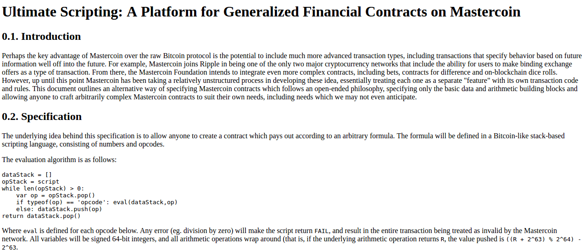
Notice that this is very far from the later and more expansive vision of Ethereum: it specialized purely in what Mastercoin was trying to specialize in already, namely two-party contracts where parties A and B would both put in money, and then they would later get money out according to some formula specified in the contract (eg. a bet would say “if X happens then give all the money to A, otherwise give all the money to B”). The scripting language was not Turing-complete.
The Mastercoin team was impressed, but they were not interested in dropping everything they were doing to go in this direction, which I was increasingly convinced is the correct choice. So here comes version 2, circa December: https://web.archive.org/web/20131219030753/http://vitalik.ca/ethereum.html
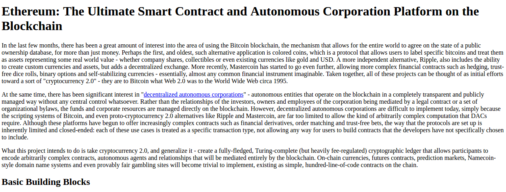
Here you can see the results of a substantial rearchitecting, largely a result of a long walk through San Francisco I took in November once I realized that smart contracts could potentially be fully generalized. Instead of the scripting language being simply a way of describing the terms of relations between two parties, contracts were themselves fully-fledged accounts, and had the ability to hold, send and receive assets, and even maintain a permanent storage (back then, the permanent storage was called “memory”, and the only temporary “memory” was the 256 registers). The language switched from being a stack-based machine to being a register-based one on my own volition; I had little argument for this other than that it seemed more sophisticated.
Additionally, notice that there is now a built-in fee mechanism:
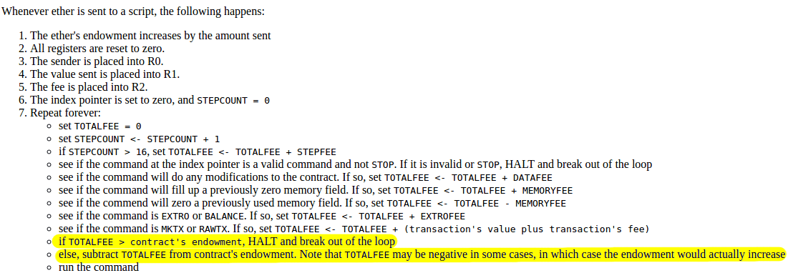
At this point, ether literally was gas; after every single computational step, the balance of the contract that a transaction was calling would drop a little bit, and if the contract ran out of money execution would halt. Note that this “receiver pays” mechanism meant that the contract itself had to require the sender to pay the contract a fee, and immediately exit if this fee is not present; the protocol allocated an allowance of 16 free execution steps to allow contracts to reject non-fee-paying transactions.
This was the time when the Ethereum protocol was entirely my own creation. From here on, however, new participants started to join the fold. By far the most prominent on the protocol side was Gavin Wood, who reached out to me in an about.me message in December 2013:
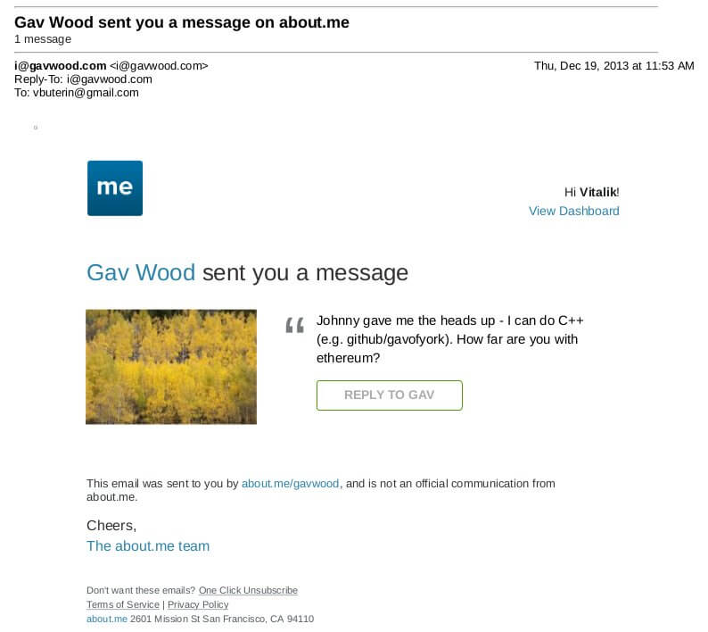
Jeffrey Wilcke, lead developer of the Go client (back then called “ethereal”) also reached out and started coding around the same time, though his contributions were much more on the side of client development rather than protocol research.
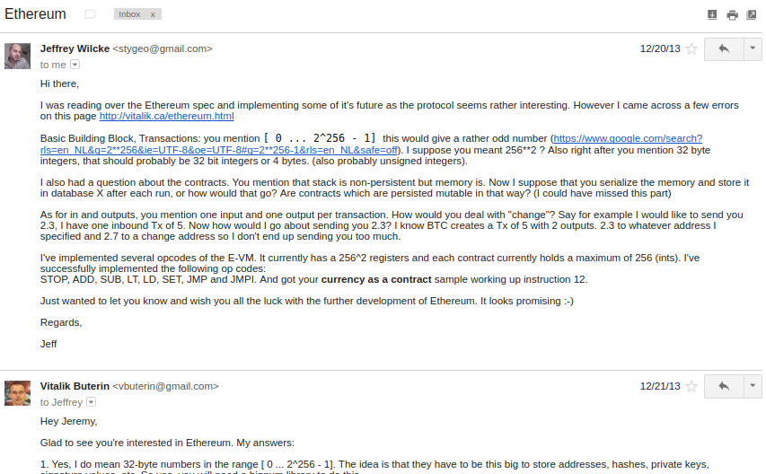
Gavin’s initial contributions were two-fold. First, you might notice that the contract calling model in the initial design was an asynchronous one: although contract A could create an “internal transaction” to contract B (“internal transaction” is Etherscan’s lingo; initially they were just called “transactions” and then later “message calls” or “calls”), the internal transaction’s execution would not start until the execution of the first transaction completely finished. This meant that transactions could not use internal transactions as a way of getting information from other contracts; the only way to do that was the EXTRO opcode (kind of like an SLOAD that you could use to read other contracts’ storage), and this too was later removed with the support of Gavin and others.
When implementing my initial spec, Gavin naturally implemented internal transactions synchronously without even realizing that the intent was different - that is to say, in Gavin’s implementation, when a contract calls another contract, the internal transaction gets executed immediately, and once that execution finishes, the VM returns back to the contract that created the internal transaction and proceeds to the next opcode. This approach seemed to both of us to be superior, so we decided to make it part of the spec.
Second, a discussion between him and myself (during a walk in San Francisco, so the exact details will be forever lost to the winds of history and possibly a copy or two in the deep archives of the NSA) led to a re-factoring of the transaction fee model, moving away from the “contract pays” approach to a “sender pays” approach, and also switching to the “gas” architecture. Instead of each individual transaction step immediately taking away a bit of ether, the transaction sender pays for and is allocated some “gas” (roughly, a counter of computational steps), and computational steps drew from this allowance of gas. If a transaction runs out of gas, the gas would still be forfeit, but the entire execution would be reverted; this seemed like the safest thing to do, as it removed an entire class of “partial execution” attacks that contracts previously had to worry about. When a transaction execution finishes, the fee for any unused gas is refunded.
Gavin can also be largely credited for the subtle change in vision from viewing Ethereum as a platform for building programmable money, with blockchain-based contracts that can hold digital assets and transfer them according to pre-set rules, to a general-purpose computing platform. This started with subtle changes in emphasis and terminology, and later this influence became stronger with the increasing emphasis on the “Web 3” ensemble, which saw Ethereum as being one piece of a suite of decentralized technologies, the other two being Whisper and Swarm.
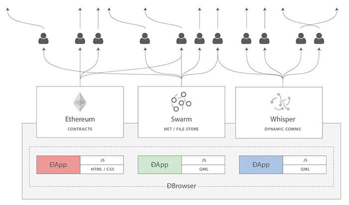
There were also changes made around the start of 2014 that were suggested by others. We ended up moving back to a stack-based architecture after the idea was suggested by Andrew Miller and others.
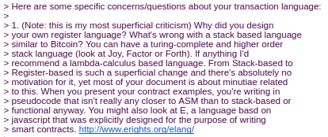
Charles Hoskinson suggested the switch from Bitcoin’s SHA256 to the newer SHA3 (or, more accurately, keccak256). Although there was some controversy for a while, discussions with Gavin, Andrew and others led to establishing that the size of values on the stack should be limited to 32 bytes; the other alternative being considered, unlimited-size integers, had the problem that it was too difficult to figure out how much gas to charge for additions, multiplications and other operations.
The initial mining algorithm that we had in mind, back in January 2014, was a contraption called Dagger: https://github.com/ethereum/wiki/blob/master/Dagger.md
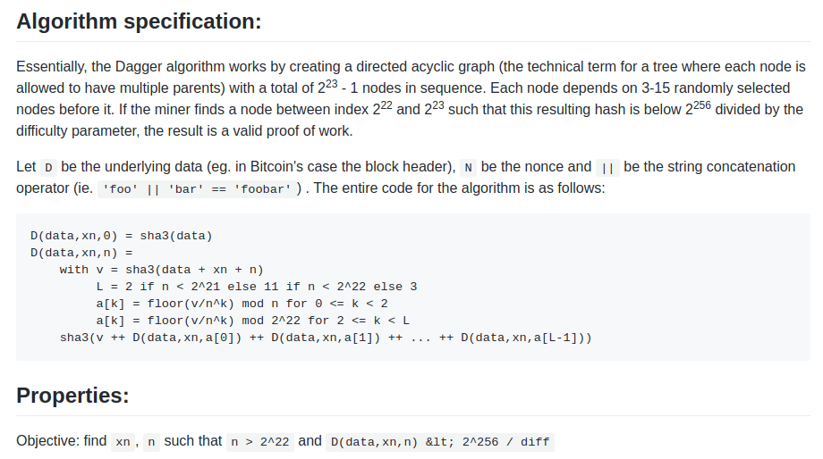
Dagger was named after the “directed acyclic graph” (DAG), the mathematical structure that is used in the algorithm. The idea is that every N blocks, a new DAG would be pseudorandomly generated from a seed, and the bottom layer of the DAG would be a collection of nodes that takes several gigabytes to store. However, generating any individual value in the DAG would require calculating only a few thousand entries. A “Dagger computation” involved getting some number of values in random positions in this bottom-level dataset and hashing them together. This meant that there was a fast way to make a Dagger calculation - already having the data in memory, and a slow, but not memory intensive way - regenerating each value from the DAG that you need to get from scratch.
The intention of this algorithm was to have the same “memory-hardness” properties as algorithms that were popular at the time, like Scrypt, but still be light-client friendly. Miners would use the fast way, and so their mining would be constrained by memory bandwidth (the theory is that consumer-grade RAM is already very heavily optimized, and so it would be hard to further optimize it with ASICs), but light clients could use the memory-free but slower version for verification. The fast way might take a few microseconds and the slow but memory-free way a few milliseconds, so it would still be very viable for light clients.
From here, the algorithm would change several times over the course of Ethereum development. The next idea that we went through is “adaptive proof of work”; here, the proof of work would involve executing randomly selected Ethereum contracts, and there is a clever reason why this is expected to be ASIC-resistant: if an ASIC was developed, competing miners would have the incentive to create and publish many contracts that that ASIC was not good at executing. There is no such thing as an ASIC for general computation, the story goes, as that is just a CPU, so we could instead use this kind of adversarial incentive mechanism to make a proof of work that essentially was executing general computation.
This fell apart for one simple reason: long-range attacks. An attacker could start a chain from block 1, fill it up with only simple contracts that they can create specialized hardware for, and rapidly overtake the main chain. So… back to the drawing board.
The next algorithm was something called Random Circuit, described in this google doc here, proposed by myself and Vlad Zamfir, and analyzed by Matthew Wampler-Doty and others. The idea here was also to simulate general-purpose computation inside a mining algorithm, this time by executing randomly generated circuits. There’s no hard proof that something based on these principles could not work, but the computer hardware experts that we reached out to in 2014 tended to be fairly pessimistic on it. Matthew Wampler-Doty himself suggested a proof of work based on SAT solving, but this too was ultimately rejected.
Finally, we came full circle with an algorithm called “Dagger Hashimoto”. “Dashimoto”, as it was sometimes called in short, borrowed many ideas from Hashimoto, a proof of work algorithm by Thaddeus Dryja that pioneered the notion of “I/O bound proof of work”, where the dominant limiting factor in mining speed was not hashes per second, but rather megabytes per second of RAM access. However, it combined this with Dagger’s notion of light-client-friendly DAG-generated datasets. After many rounds of tweaking by myself, Matthew, Tim and others, the ideas finally converged into the algorithm we now call Ethash.
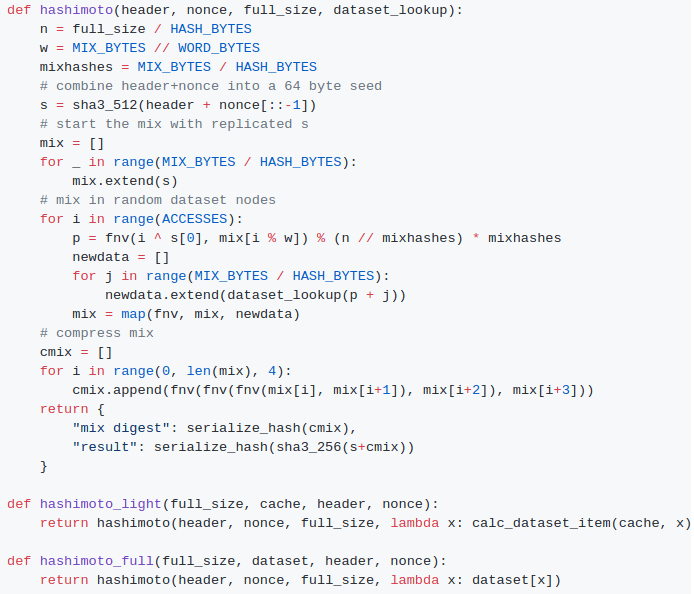
By the summer of 2014, the protocol had considerably stabilized, with the major exception of the proof of work algorithm which would not reach the Ethash phase until around the beginning of 2015, and a semi-formal specification existed in the form of Gavin’s yellow paper.
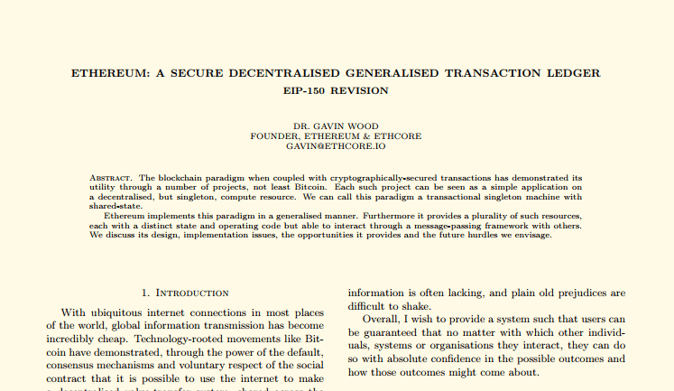
In August 2014, I developed and introduced the uncle mechanism, which allows Ethereum’s blockchain to have a shorter block time and higher capacity while mitigating centralization risks. This was introduced as part of PoC6.
Discussions with the Bitshares team led us to consider adding heaps as a first-class data structure, though we ended up not doing this due to lack of time, and later security audits and DoS attacks will show that it is actually much harder than we had thought at the time to do this safely.
In September, Gavin and I planned out the next two major changes to the protocol design. First, alongside the state tree and transaction tree, every block would also contain a “receipt tree”. The receipt tree would include hashes of the logs created by a transaction, along with intermediate state roots. Logs would allow transactions to create “outputs” that are saved in the blockchain, and are accessible to light clients, but that are not accessible to future state calculations. This could be used to allow decentralized applications to easily query for events, such as token transfers, purchases, exchange orders being created and filled, auctions being started, and so forth.
There were other ideas that were considered, like making a Merkle tree out of the entire execution trace of a transaction to allow anything to be proven; logs were chosen because they were a compromise between simplicity and completeness.
The second was the idea of “precompiles”, solving the problem of allowing complex cryptographic computations to be usable in the EVM without having to deal with EVM overhead. We had also gone through many more ambitious ideas about “native contracts”, where if miners have an optimized implementation of some contracts they could “vote” the gasprice of those contracts down, so contracts that most miners could execute much more quickly would naturally have a lower gas price; however, all of these ideas were rejected because we could not come up with a cryptoeconomically safe way to implement such a thing. An attacker could always create a contract which executes some trapdoored cryptographic operation, distribute the trapdoor to themselves and their friends to allow them to execute this contract much faster, then vote the gasprice down and use this to DoS the network. Instead we opted for the much less ambitious approach of having a smaller number of precompiles that are simply specified in the protocol, for common operations such as hashes and signature schemes.
Gavin was also a key initial voice in developing the idea of “protocol abstraction” - moving as many parts of the protocol such as ether balances, transaction signing algorithms, nonces, etc into the protocol itself as contracts, with a theoretical final goal of reaching a situation where the entire ethereum protocol could be described as making a function call into a virtual machine that has some pre-initialized state. There was not enough time for these ideas to get into the initial Frontier release, but the principles are expected to start slowly getting integrated through some of the Constantinople changes, the Casper contract and the sharding specification.
This was all implemented in PoC7; after PoC7, the protocol did not really change much, with the exception of minor, though in some cases important, details that would come out through security audits…
In early 2015, came the pre-launch security audits organized by Jutta Steiner and others, which included both software code audits and academic audits. The software audits were primarily on the C++ and Go implementations, which were led by Gavin Wood and Jeffrey Wilcke, respectively, though there was also a smaller audit on my pyethereum implementation. Of the two academic audits, one was performed by Ittay Eyal (of “selfish mining” fame), and the other by Andrew Miller and others from Least Authority. The Eyal audit led to a minor protocol change: the total difficulty of a chain would not include uncles. The Least Authority audit was more focused on smart contract and gas economics, as well as the Patricia tree. This audit led to several protocol changes. One small one is the use of sha3(addr) and sha3(key) as trie keys instead of the address and key directly; this would make it harder to perform a worst-case attack on the trie.
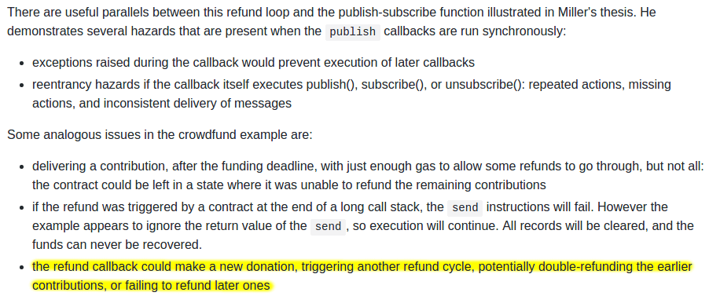
Another significant thing that we discussed was the gas limit voting mechanism. At the time, we were already concerned by perceived lack of progress in the bitcoin block size debate, and wanted to have a more flexible design in Ethereum that could adjust over time as needed. But the challenge is: what is the optimal limit? My initial thought had been to make a dynamic limit, targeting 1.5 times the long-term exponential moving average of the actual gas usage, so that in the long run on average blocks would be 2/3 full. However, Andrew showed that this was exploitable in some ways - specifically, miners who wanted to raise the limit would simply include transactions in their own blocks that consume a very large amount of gas, but take very little time to process, and thereby always create full blocks at no cost to themselves. The security model was thus, at least in the upward direction, equivalent to simply having miners vote on the gas limit.
We did not manage to come up with a gas limit strategy that was less likely to break, and so Andrew’s recommended solution was to simply have miners vote on the gas limit explicitly, and have the default strategy for voting be the 1.5x EMA rule. The reasoning was that we were still very far from knowing the right approach for setting maximum gas limits, and the risk of any specific approach failing seemed greater than the risk of miners abusing their voting power. Hence, we might as well simply let miners vote on the gas limit, and accept the risk that the limit will go too high or too low, in exchange for the benefit of flexibility, and the ability for miners to work together to very quickly adjust the limit upwards or downwards as needed.
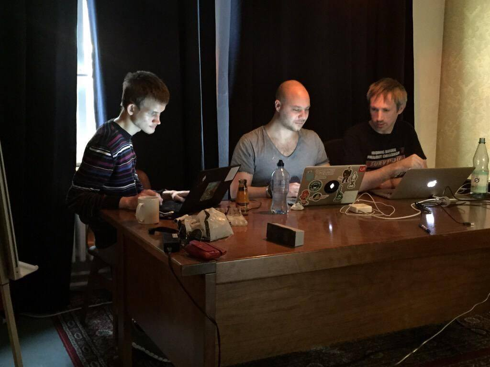
After a mini-hackathon between Gavin, Jeff and myself, PoC9 was launched in March, and was intended to be the final proof of concept release. A testnet, Olympic, ran for four months, using the protocol that was intended to be used in the livenet, and Ethereum’s long-term plan was established. Vinay Gupta wrote a blog post, “The Ethereum Launch Process”, that described the four expected stages of Ethereum livenet development, and gave them their current names: Frontier, Homestead, Metropolis and Serenity.
Olympic ran for four months. In the first two months, many bugs were found in the various implementations, consensus failures happened, among other issues, but around June the network noticeably stabilized. In July a decision was made to make a code-freeze, followed by a release, and on July 30 the release took place.
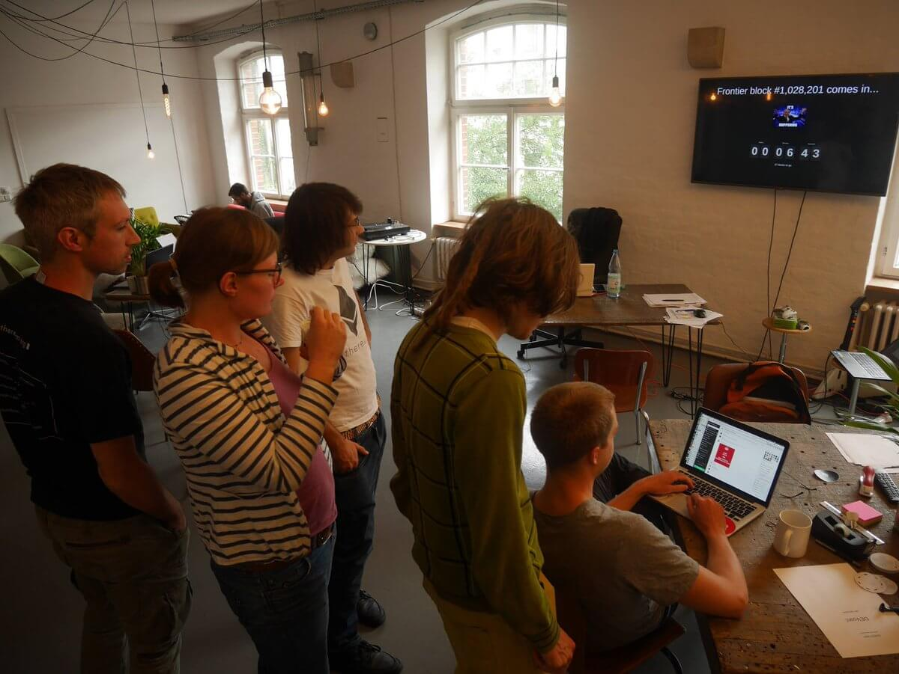